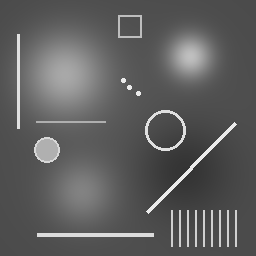

Image measurements
FOV values in this lab are supplied teaching assumptions. They cannot be inferred from an ordinary PNG; in clinical DICOM images, pixel spacing is encoded in metadata when available.
Opened grayscale image

Calculation steps
Total pixels = columns × rowsPixel width (mm) = horizontal FOV ÷ columns
Pixel height (mm) = vertical FOV ÷ rows
- With a 256 × 256 image and FOV 160 × 160 mm, calculate total pixels and the physical pixel size.
- Change the image to 512 × 384. Set the FOV to 240 × 180 mm. Is the physical pixel size equal horizontally and vertically?
- If an image contains 256 pixels in total and is square, how many pixels are along each side? (Careful: 256 total ≠ 256 × 256.)
Bit depth, grey levels and posterisation
Original mixed image (8-bit source)
Quantised image

These examples are pre-generated PNGs to ensure they display reliably. A particular image may use fewer distinct greys than the maximum permitted by its bit depth. All downloadable PNG examples are stored as ordinary 8-bit grayscale files; the 4- and 16-level images simulate lower quantisation by using no more than that number of distinct intensity values. They are not 2-bit or 4-bit file formats.
- How many grey levels can a 2-bit, 4-bit or 8-bit intensity code represent?
- Which image shows the strongest posterisation on the smooth blobs?
- How does intensity resolution differ from spatial resolution?
2D FFT practical: use ImageJ
The FFT has been removed from this browser tool. For the low-frequency and high-frequency filtering exercises, open the mixed sample PNG in ImageJ and follow the Tutorial 3 ImageJ instructions.
Take-home messages
Matrix dimensions describe pixel counts; physical pixel size is field of view divided by pixel count on the corresponding axis. Bit depth determines the maximum number of distinct intensity levels. Decreasing grey levels produces stronger posterisation. For FFT masking and inverse FFT, use ImageJ.